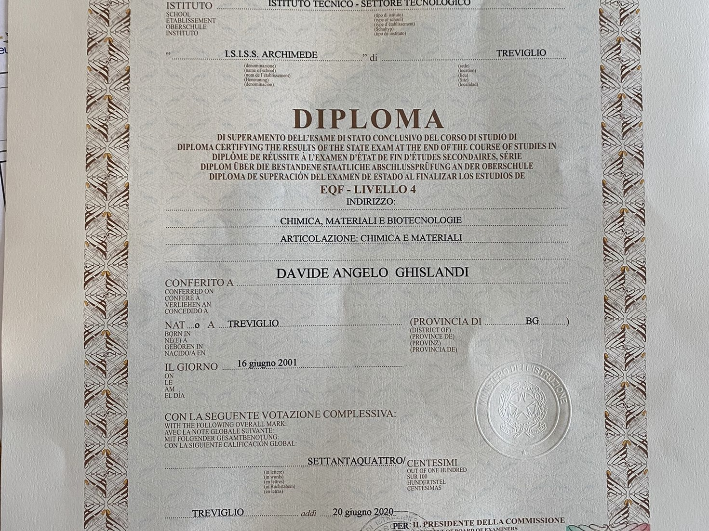

Competenze
- Chimiche: essendo perito chimico ho competenze di teoriche e di laboratorio nel campo chimico
- Dinamiche lavorative: lavorando da diversi anni come calciatore ho sviluppato le conoscenze pratico-gestionali di un lavoro professionisitico sportivo
- video-editor: ho girato per divertimento tanti video in una vacanza a Londra, poi montanti, editati e caricati sulla mia pagina youtube
Competenze Informatiche
- html e css: sto imparando grazie a questo corso html-css e in questo sito sto provando a dimostrare tutto ciò che ho appreso
- Swift: lo scorso anno da autodidatta ho provato ad imparare ad utilizzare swift e prossimamente voglio impararlo bene
Ghislandi Davide
Luogo e data di nascita: Treviglio, 16/06/2001
Esperienze formative: nulla di particolare nel settore chimico, dal punto di vista sportivo invece avendo cambiato squadra ho vissuto in 3 diverse città
Attestati:

diploma perito chimico.
corso di alimentazione.